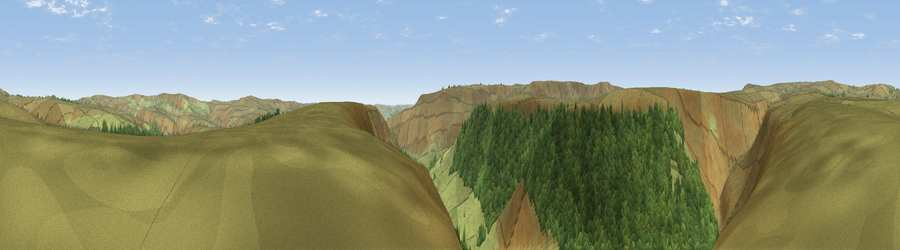

Viewpoint c7841_8274
#23085 in England · top 42% of its area beats it · —The view, rendered

A 360° render of this exact spot computed from the terrain model, tree cover and land cover — summer colours, afternoon light, calibrated against photographs of famous viewpoints. Real trees, hedges and buildings will differ in detail.
The panorama
Grey silhouette: terrain skyline in each direction (720 bearings, Earth curvature and refraction included). Dashed green: skyline with trees (+15 m) and buildings (+8 m) as obstacles. Blue strip: how far the ground is visible on each bearing.
Where the view opens
Wedge length = distance to the farthest visible ground on that bearing (vegetation-aware). Rings at 10, 25 and 50 km.
What fills the view
62% grassland · 38% woodland
Angular shares of the visible panorama (visual magnitude), not map area. Landscape diversity 0.29 (0–1 Shannon).
Key numbers
More beautiful places nearby
The staircase of upgrades: each row has a higher view potential than everything closer. Driving times are estimates from straight-line distance, calibrated against real road routing — check an actual route before setting out.
| Place | Direction | Drive | Score |
|---|---|---|---|
| Rowlee Pasture | SE · 2 km | ~6 min | 53.3 |
| Viewpoint c7927_8275 | N · 4 km | ~10 min | 60.6 |
| Viewpoint near Edale | S · 4 km | ~10 min | 66.8 |
| High Stones | ENE · 6 km | ~12 min | 70.7 |
| Back Tor | E · 6 km | ~13 min | 71.1 |
| Viewpoint c7795_8393 | ESE · 6 km | ~13 min | 71.7 |
| Viewpoint near Thornhill | ESE · 7 km | ~14 min | 74.1 |
| Harrop Edge | WNW · 16 km | ~28 min | 74.6 |
53.42529, -1.79492 · source: screening · position refined by local search. Computed location — check access rights before visiting.